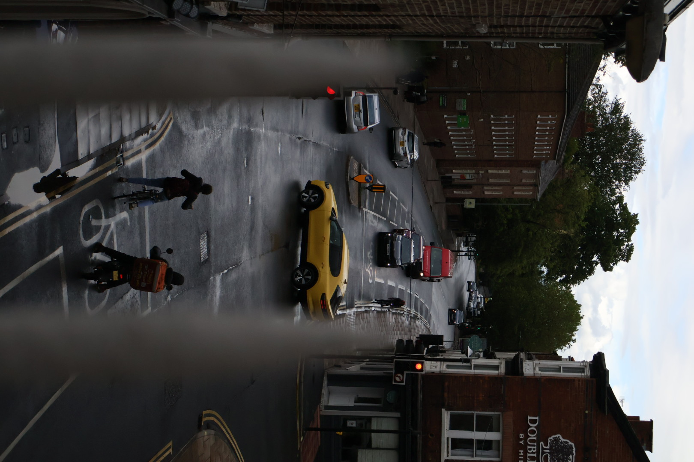
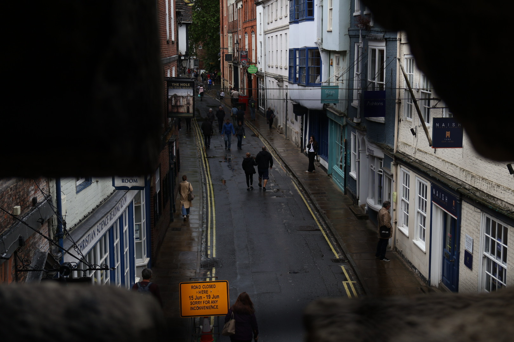

Designer com mais de 15 anos de experiência, 12 deles dedicados a produto, transformando necessidades de negócio em produtos intuitivos e com senso estético.
Já atuei em diversos mercados, como educação, bancos, agro, comércio exterior e marketplaces, sobretudo em produtos B2B, sempre traduzindo regras de negócio complexas em decisões de design claras e bem estruturadas.
Atuo da definição do problema e pesquisa à criação da interface, design system, validação e entrega. Acredito que o sucesso de um produto está no equilíbrio entre o negócio e na pessoa que usa, e que uma boa experiência sabe encantar e surpreender, desde uma arquitetura bem-feita até microinterações bem pensadas.
Hoje, na Cienty, sou o único designer e já passei por inúmeros momentos. Atualmente, nosso desafio é focado em criar novas formas de comprar e engajar os clientes. Aqui comecei a usar a IA ativamente no meu processo de pesquisa e prototipação, reduzindo de horas para minutos tarefas que antes eram manuais.
Na vida pessoal, gosto de passar tempo com minha esposa e minha filha ❤️, além de ler (me siga no Fable), correr, fotografar e jogar videogame.
Habilidades e ferramentas
Experiência
Antes disso, atuei com web design, publicidade e branding.
Educação
Cursos
- Product Discovery · 2023
- Product Analytics · 2024
- Product Leadership · 2024
- Product Growth · 2024


